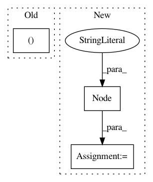

e0c9d018aca7bf05486c385484d5ed1c37bac423,pynets/diffconnectometry.py,,create_mni2diff_transforms,#Any#,13
Before Change
flirt = pe.Node(interface=fsl.FLIRT(cost_func="mutualinfo"), name="coregister")
flirt.inputs.reference = dwi_infile
flirt.inputs.in_file = input_MNI
flirt.inputs.out_matrix_file = "%s%s" % (dwi_dir, "/xfms/MNI2diff.mat")
flirt.inputs.out_file = "/tmp/out_flirt.nii.gz"
flirt.run()
// Apply transform between diff and MNI using FLIRT
After Change
out_aff = "%s%s" % (dwi_dir, "/xfms/MNI2diff_affine.nii.gz")
diff_transforms_wf = pe.Workflow(name="diff_transforms")
inputnode = pe.Node(niu.IdentityInterface(fields=["dwi_infile", "input_MNI",
"out_aff", "mat_file"]),
name="inputnode")
inputnode.inputs.dwi_infile = dwi_infile
inputnode.inputs.input_MNI = input_MNI
inputnode.inputs.out_aff = out_aff
inputnode.inputs.mat_file = "%s%s" % (dwi_dir, "/xfms/MNI2diff.mat")
In pattern: SUPERPATTERN
Frequency: 3
Non-data size: 3
Instances
Project Name: dPys/PyNets
Commit Name: e0c9d018aca7bf05486c385484d5ed1c37bac423
Time: 2018-10-13
Author: dpisner@utexas.edu
File Name: pynets/diffconnectometry.py
Class Name:
Method Name: create_mni2diff_transforms
Project Name: idank/explainshell
Commit Name: 325d88c95defcf89e98dcf2ac9ac7d53bbea1b99
Time: 2013-09-07
Author: idankk86@gmail.com
File Name: explainshell/parser.py
Class Name: CommandLineParser
Method Name: parse_simple_command
Project Name: idank/explainshell
Commit Name: 3e71876080f9210e051a96348a75b570b7f74c56
Time: 2013-09-07
Author: idankk86@gmail.com
File Name: explainshell/parser.py
Class Name: CommandLineParser
Method Name: parse_command